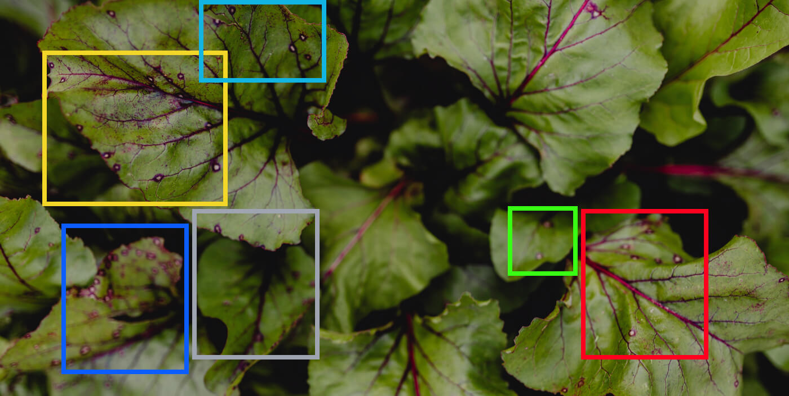
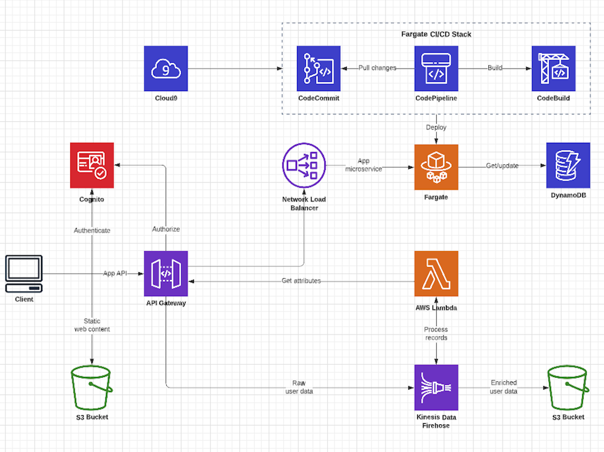
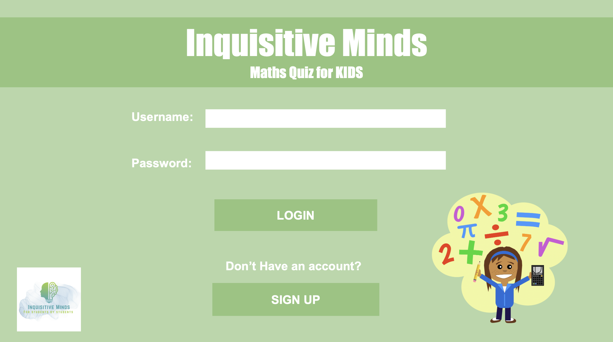
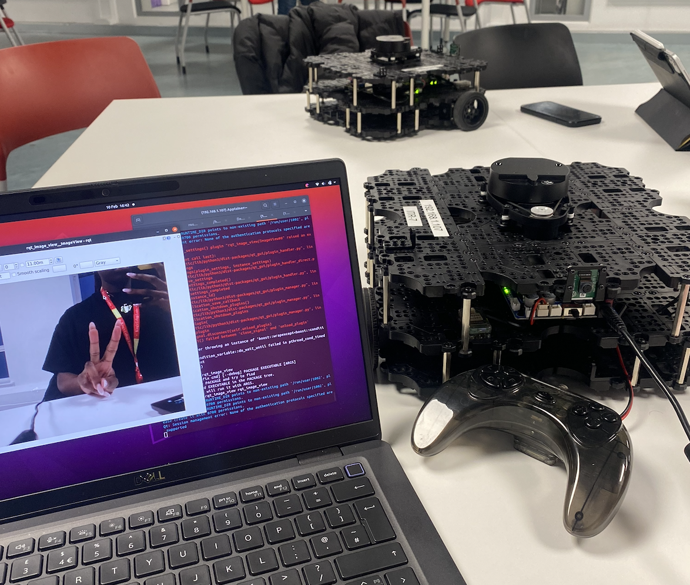
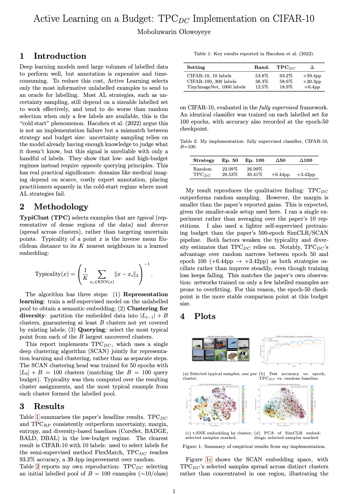
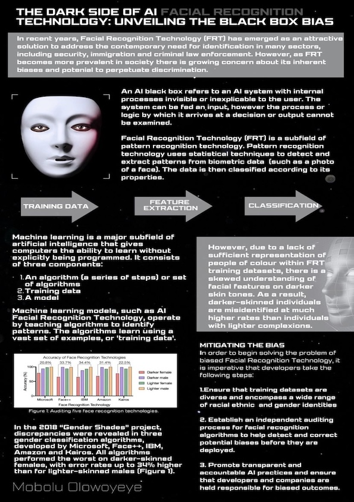
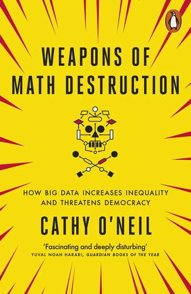
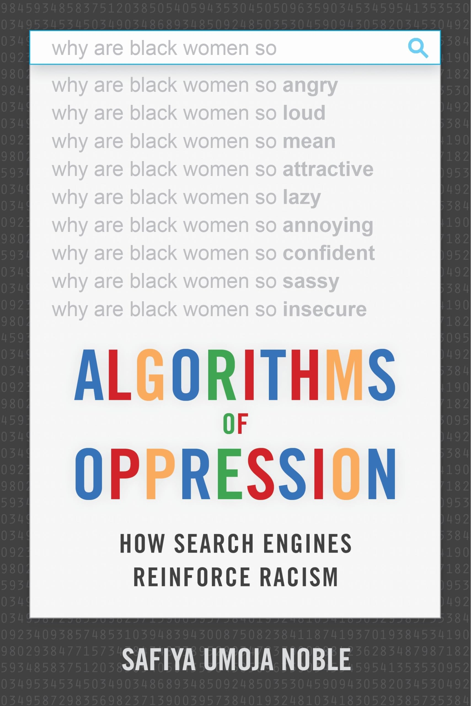
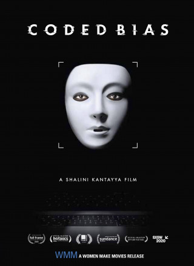

Research & Projects
I love working on cool projects! Here is a selection of research, coursework and personal projects I've worked on, from academic posters and research work to machine learning and software builds.
Synthetic Clinical Notes: Diversifying AI training data in the NHS & LLM Evals
Generating synthetic clinical notes using large language models to support NHS England's data science and AI work. View on GitHub →

Plant Disease Classifier

Identifies and classifies plant diseases based on a leaf image.

Content Moderation SaaS

A microservices-based SaaS that automatically screens user comments and messages for toxic, abusive, or harmful language using a fine-tuned DistilBERT model, routing flagged content to human moderators for review. View on GitHub →
Care Sense: AI Medical Diagnosis Tool
An AI diagnosis assistant that can aid doctors in diagnosing patients.

Maths Game for Kids

Created a gamified maths platform using JavaScript and p5.js, with interactive games for kids to practice arithmetic in an entertaining way.

Robotics: Room classification Project

Built a YOLOv4 & ROS robot system that classifies the room it’s in, detecting objects using weighted object-to-room mappings.

Active Learning on a Budget: TPCDC Implementation on CIFAR-10

Implementation of an active learning strategy (TPCDC) on CIFAR-10, awarded 100 in my Machine Learning module.

The Dark Side of AI Facial Recognition: Unveiling the Black Box Bias

Academic research poster, titled ‘The Dark Side of AI Facial Recognition: Unveiling the Black Box Bias’, which addresses the problem of algorithmic bias in facial recognition technology. View on LinkedIn →
Interested in learning more about algorithmic bias? Dive into these.

Weapons of Math Destruction
Algorithms of Oppression
Coded Bias